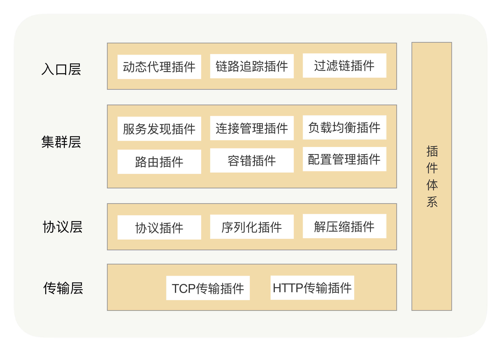

- 00 开篇词 别老想着怎么用好RPC框架，你得多花时间琢磨原理.md.html
- 01 核心原理：能否画张图解释下RPC的通信流程？.md.html
- 02 协议：怎么设计可扩展且向后兼容的协议？.md.html
- 03 序列化：对象怎么在网络中传输？.md.html
- 04 网络通信：RPC框架在网络通信上更倾向于哪种网络IO模型？.md.html
- 05 动态代理：面向接口编程，屏蔽RPC处理流程.md.html
- 06 RPC实战：剖析gRPC源码，动手实现一个完整的RPC.md.html
- 07 架构设计：设计一个灵活的RPC框架.md.html
- 08 服务发现：到底是要CP还是AP？.md.html
- 09 健康检测：这个节点都挂了，为啥还要疯狂发请求？.md.html
- 10 路由策略：怎么让请求按照设定的规则发到不同的节点上？.md.html
- 11 负载均衡：节点负载差距这么大，为什么收到的流量还一样？.md.html
- 12 异常重试：在约定时间内安全可靠地重试.md.html
- 13 优雅关闭：如何避免服务停机带来的业务损失？.md.html
- 14 优雅启动：如何避免流量打到没有启动完成的节点？.md.html
- 15 熔断限流：业务如何实现自我保护_.md.html
- 16 业务分组：如何隔离流量？.md.html
- 17 异步RPC：压榨单机吞吐量.md.html
- 18 安全体系：如何建立可靠的安全体系？.md.html
- 19 分布式环境下如何快速定位问题？.md.html
- 20 详解时钟轮在RPC中的应用.md.html
- 21 流量回放：保障业务技术升级的神器.md.html
- 22 动态分组：超高效实现秒级扩缩容.md.html
- 23 如何在没有接口的情况下进行RPC调用？.md.html
- 24 如何在线上环境里兼容多种RPC协议？.md.html
- 加餐 RPC框架代码实例详解.md.html
- 加餐 谈谈我所经历过的RPC.md.html
- 答疑课堂 基础篇与进阶篇思考题答案合集.md.html
- 结束语 学会从优秀项目的源代码中挖掘知识.md.html
- 捐赠
加餐 RPC框架代码实例详解
你好，我是何小锋，好久不见！咱们专栏结课有段时间了，这期间我和编辑冬青一起对整个课程做了复盘，也认真挨个逐字看了结课问卷中的反馈，其中呼声最高的是“想看RPC代码实例”，今天我就带着你的期待来了。
还记得我在[结束语]提到过，我在写这个专栏之前，把公司内部我负责的RPC框架重新写了一遍。口说无凭，现在这个RPC框架已经开源，接受你的检阅。
下面我就针对这套代码做一个详细的解析，希望能帮你串联已学的知识点，实战演练，有所收获。
RPC框架整体结构
首先说我们RPC框架的整体架构，这里请你回想下[第 07 讲]，在这一讲中我讲解了如何设计一个灵活的RPC框架，其关键点就是插件化，我们可以利用插件体系来提高RPC的扩展性，使其成为一个微内核架构，如下图所示：

这里我们可以看到，我们将RPC框架大体分为了四层，分别是入口层、集群层、协议层和传输层，而这四层中分别包含了一系列的插件，而在实际的RPC框架中插件会更多。在我所开源的RPC框架中就超过了50个插件，其中涉及到的代码量也是相当大的，下面我就通过服务端启动流程、调用端启动流程、RPC调用流程这三大流程来将RPC框架的核心模块以及核心类串联起来，理解了这三大流程会对你阅读代码有非常大的帮助。
服务端启动流程
在讲解服务启动流程之前，我们先看下服务端启动的代码示例，如下：
public static void main(String[] args) throws Exception {
DemoService demoService = new DemoServiceImpl(); //服务提供者设置
ProviderConfig<DemoService> providerConfig = new ProviderConfig<>();
providerConfig.setServerConfig(new ServerConfig());
providerConfig.setInterfaceClazz(DemoService.class.getName());
providerConfig.setRef(demoService);
providerConfig.setAlias("joyrpc-demo");
providerConfig.setRegistry(new RegistryConfig("broadcast"));
providerConfig.exportAndOpen().whenComplete((v, t) -> {
if (t != null) {
logger.error(t.getMessage(), t);
System.exit(1);
}
});
System.in.read();
}
我们可以看出，providerConfig是通过调用exportAndOpen()方法来启动服务端的，那么为何这个方法要如此命名呢？
我们可以看下 exportAndOpen 方法的代码实现：
public CompletableFuture<Void> exportAndOpen() {
CompletableFuture<Void> future = new CompletableFuture<>();
export().whenComplete((v, t) -> {
if (t != null) {
future.completeExceptionally(t);
} else {
Futures.chain(open(), future);
}
});
return future;
}
这里服务的启动流程被分为了两个部分，export（创建Export对象）以及open（打开服务）。而服务端的启动流程也被分为了两部分：服务端的创建流程与服务端的开启流程。
服务端创建流程
这里的ProviderConfig是服务端的配置对象，其中接口、分组、注册中心配置等等的相关信息都在这个配置类中配置，流程的入口是调用ProviderConfig的export方法，整个流程如下：
- 根据ProviderConfig的配置信息生成registryUrl（注册中心URL对象）与serviceUrl（服务URL对象）；
- 根据registryUrl，调用Registry插件，创建Registry对象，Registry对象为注册中心对象，与注册中心进行交互；
- 调用Registry对象的open方法，开启注册中心对象，也就是与注册中心建立连接；
- 调用Registry对象的subscribe方法，订阅接口的配置信息与全局配置信息；
- 调用InvokerManager，创建Exporter对象；
- InvokerManager返回Exporter对象。
服务端的创建流程实际上就是Exporter对象，Exporter对象是调用器Invoker接口的子类，Invoker接口有两个子类，分别是Exporter与Refer，Exporter用来处理服务端接收的请求，而Refer用来向服务端发送请求，这两个类可以说是入口层最为核心的两个类。
在InvokerManager创建Exporter对象时实际上会有一系列的操作，而初始化Exporter也会有一系列的操作，如创建Filter链、创建认证信息等等。这里不再详细叙述，你可以阅读下源码。
服务端开启流程
创建完服务端的Exporter对象之后，我们就要开启Exporter对象，开启Exporter对象最重要的两个操作就是开启传输层中Server的端口，用来接收调用端发送过来的请求，以及将服务端节点注册到注册中心上，让调用端可以发现到这个服务节点，整个流程如下：
- 调用Exporter对象的open方法，开启服务端；
- Exporter对象调用接口预热插件，进行接口预热；
- Exporter对象调用传输层中的EndpointFactroy插件，创建一个Server对象，一个Server对象就代表一个端口了；
- 调用Server对象的open方法，开启端口，端口开启之后，服务端就可以提供远程服务了；
- Exporter对象调用Registry对象的register方法，将这个调用端节点注册到注册中心中。
这里无论是Exporter的open方法、Server的open还是Registry的register方法，都是异步方法，返回值为CompletableFuture对象，这个流程的每个环节也都是异步的。
Server的open操作实际上是一个比较复杂的操作，要绑定协议适配器、初始化session管理器、添加eventbus事件监听等等的操作，而且整个流程完全异步，并且是插件化的。
调用端启动流程
在讲解调用端启动流程之前，我们还是先看下代码示例，调用端启动代码示例如下：
public static void main(String[] args) {
ConsumerConfig<DemoService> consumerConfig = new ConsumerConfig<>(); //consumer设置
consumerConfig.setInterfaceClazz(DemoService.class.getName());
consumerConfig.setAlias("joyrpc-demo");
consumerConfig.setRegistry(new RegistryConfig("broadcast"));
try {
CompletableFuture<DemoService> future = consumerConfig.refer();
DemoService service = future.get();
String echo = service.sayHello("hello"); //发起服务调用
logger.info("Get msg: {} ", echo);
} catch (Throwable e) {
logger.error(e.getMessage(), e);
}
System.in.read();
}
调用端流程的启动入口就是ConsumerConfig对象的refer方法，ConsumerConfig对象就是调用端的配置对象，这里可以看到refer方法的返回值是CompletableFuture，与服务端相同，调用端的启动流程也完全是异步的，下面我们来看下调用端的启动流程。
调用端具体流程如下：
- 根据ConsumerConfig的配置信息生成registryUrl（注册中心URL对象）与serviceUrl（服务URL对象）；
- 根据registryUrl，调用Registry插件，创建Registry对象，Registry对象为注册中心对象，与注册中心进行交互；
- 创建动态代理对象；
- 调用Registry对象的Open方法，开启注册中心对象；
- 调用Registry对象subscribe方法，订阅接口的配置信息与全局配置信息；
- 调用InvokeManager的refer方法，用来创建Refer对象；
- InvokeManager在创建Refer对象之前会先创建Cluster对象，Cluser对象是集群层的核心对象，Cluster会维护该调用端与服务端节点的连接状态；
- InvokeManager创建Refer对象；
- Refer对象初始化，其中主要包括创建路由策略、消息分发策略、创建负载均衡、调用链、添加eventbus事件监听等等；
- ConsumerConfig调用Refer的open方法，开启调用端；
- Refer对象调用Cluster对象的open方法，开启集群；
- Cluster对象调用Registry对象的subcribe方法，订阅服务端节点变化，收到服务端节点变化时，Cluster会调用传输层EndpointFactroy插件，创建Client对象，与这些服务节点建立连接，Cluster会维护这些连接；
- ConsumerConfig调用Refer对象封装到ConsumerInvokerHandler中，将ConsumerInvokerHandler对象注入给动态代理对象。
在调用端的开启流程中，最复杂的操作就是Cluster对象的open操作以及Client对象的open操作。
Cluster对象是集群层的核心对象，也是这个RPC框架中处理逻辑最为复杂的对象，Cluster对象负责维护该调用端节点集群信息，监听注册中心推送的服务节点更新事件，调用传输层中的EndpointFactroy插件，创建Client对象，并且会通过Client与服务端节点建立连接，发送协商信息、安全验证信息、心跳信息，通过心跳机制维护与服务节点的连接状态。
Client对象的open操作也是有着一系列的操作，比如创建Transport对象，创建Channel对象，生成并记录session信息等等。
Refer对象在构造调用链的时候，其最后一个调用链就是Refer对象的distribute方法，用来发送远程请求。
动态代理对象内部的核心逻辑就是调用ConsumerInvokerHandler对象的Invoke方法，最终就是调用Refer对象，我会在下面的RPC调用流程中详细讲下。
RPC调用流程
讲解完了服务端的启动流程与调用端的启动流程，下面我开始讲解RPC的调用流程。RPC的整个调用流程就是调用端发送请求消息以及服务端接收请求消息并处理，之后响应给调用端的流程。
下面我就讲解下调用端的发送流程与服务端的接收流程。
调用端发送流程
调用端发送流程如下：
- 动态代理对象调用ConsumerInvokerHandler对象的Invoke方法；
- ConsumerInvokerHandler对象生成请求消息对象；
- ConsumerInvokerHandler对象调用Refer对象的Invoke方法；
- Refer对象对请求消息对象进行处理，如设置接口信息、分组信息等等；
- Refer对象调用消息透传插件，处理透传信息，其中就包括隐式参数信息；
- Refer对象调用FilterChain对象的Invoker方法，执行调用链；
- FilterChain对象调用每个Filter；
- Refer对象的distribute方法作为最后一个Filter，被调用链最后一个执行。
- 调用NodeSelecter对象的select方法，NodeSelecter是集群层的路由规则节点选择器，其select方法用来选择出符合路由规则的服务节点；
- 调用Route对象的route方法，Route对象为路由分发器，也是集群层中的对象，默认为路由分发策略为Failover，即请求失败后可以重试请求，这里你可以回顾下[第 12 讲]，在这一讲的思考题中我就问过异常重试发送在RPC调用中的哪个环节，其实就在此环节；
- Route对象调用LoadBalance对象的select方法，通过负载均衡选择一个节点；
- Route对象回调Refer对象的invokeRemote方法；
- Refer对象的invokeRemote方法调用传输层中Client对象，向服务端节点发送消息。
在调用端发送流程中，最终会通过传输层将消息发送给服务端，这里对传输层的操作没有详细的讲解，其实传输层内部的流程还是比较复杂的，也会有一系列的操作，比如创建Future对象、调用FutureManager管理Future对象、请求消息协议转换处理、编解码、超时处理等等的操作。
当调用端发送完请求消息之后，服务端就会接收到请求消息并对请求消息进行处理。接下来我们看服务端的接收流程。
服务端接收流程
服务端的传输层会接收到请求消息，并对请求消息进行编解码以及反序列化，之后调用Exporter对象的invoke方法，具体流程如下：
- 传输层接收到请求，触发协议适配器ProtocolAdapter；
- ProtocolAdapter对象遍历Protocol插件的实现类，匹配协议；
- 匹配协议之后，根据Protocol对象，传输层的Server对象绑定该协议的编解码器（Codec对象）、Channel处理链（ChainChannelHandler对象）；
- 对接收的消息进行解码与反序列化；
- 执行Channel处理链；
- 在业务线程池中调用消息处理链（MessageHandle插件）；
- 调用BizReqHandle对象的handle方法，处理请求消息；
- BizReqHandle对象调用restore方法，根据连接Session信息，处理请求消息数据，并根据请求的接口名、分组名与方法名，获取Exporter对象；
- 调用Exporter对象的invoke方法，Exporter对象返回CompletableFuture对象；
- Exporter对象调用FilterChain的invoke方法；
- FilterChain执行所有Filter对象；
- Exporter对象的invokeMethod方法作为最后一个Filter，最后被调用；
- Exporter对象的invokeMethod方法处理请求上下文，执行反射；
- Exporter对象将执行反射之后得到的请求结果异步通知给BizReqHandle对象；
- BizReqHandle调用传输层的Channel对象，发送响应结果；
- 传输层对响应消息进行协议转换、序列化、编码，最后通过网络传输响应给调用端。
总结
今天我们剖析了一款开源的RPC框架的代码，主要通过服务端启动流程、调用端启动流程、RPC调用流程这三大流程来将RPC框架的核心模块以及核心类串联起来。
在服务端的启动流程中，核心工作就是创建和开启Exporter对象。ProviderConfig在创建Exporter对象之前会先创建Registry对象，从注册中心中订阅接口配置与全局配置，之后才会创建Exporter对象，在Exporter开启时，会启动一个Server对象来开启一个端口，Exporter开启成功之后，才会通过Registry对象向注册中心发起注册。
在调用端的启动流程中，核心工作就是创建和开启Refer对象，开启Refer对象中处理逻辑最为复杂的就是对Cluster的open操作，Cluster负责了调用端的集群管理操作，其中有注册中心服务节点变更事件的监听、与服务端节点建立连接以及服务端节点连接状态的管理等等。
调用端向服务端发起调用时，会先经过动态代理，之后会调用Refer对象的invoke方法，Refer对象会先对要透传的消息进行处理，再执行Filter链，调用端最后一个Filter会根据配置的路由规则选择出符合条件的一组服务端节点，之后调用Route对象的route方法，route方法的内部逻辑会根据配置的负载均衡策略选择一个服务端节点，最后向这个服务端节点发送请求消息。
服务端的传输层收到调用端发送过来的请求消息，在对请求消息进行一系列处理之后（如解码、反序列化、协议转换等等），会在业务线程池中处理消息，关键的逻辑就是调用Exporter对象的invoke方法，Exporter对象的invoke方法会执行服务端配置的Filter链，最终通过反射或预编译对象执行业务逻辑，再将最终结果封装成响应消息，通过传输层响应给调用端。
本讲在调用端向服务端发起调用时，没有讲到异步调用，实际上Refer对象的invoke方法的实现逻辑完全是异步的，同样Exporter对象的invoke方法也是异步的，Refer类与Exporter类都是调用端Invoker接口的实现类，可以看下Invoker接口中invoke方法的定义:
/**
* 调用
*
* @param request 请求
* @return
*/
CompletableFuture<Result> invoke(RequestMessage<Invocation> request);
JoyRPC框架是一个纯异步的RPC框架，所谓的同步只不过是对异步进行了等待。
入口层的核心对象就是Exporter对象与Refer对象，这两个类承担了入口层的大多数核心逻辑。
集群层的核心对象就是Cluster对象与Registry对象，Cluser对象的内部逻辑还是非常复杂的，核心逻辑就是与Registry交互，订阅服务端节点变更事件，以及对与服务端节点建立的连接的管理，这里我们对Cluser对象没有进行过多介绍，你可以去查看代码。
协议层的核心对象就是Protocol接口的各个子类了。
接下来就是传输层了，传输层的具体实现我们在本讲也没有过多介绍，因为很难通过有限的内容把它讲解完整，还是建议你去查看下源码，一目了然。传输层是纯异步的并且是完全插件化的，其入口就是EndpointFactroy插件，通过EndpointFactroy插件获取一个EndpointFactroy对象，EndpointFactroy对象是一个工厂类，用来创建Client对象与Server对象。
对于一个完善的RPC框架，今天我们仅是针对服务端启动流程、调用端启动流程、RPC调用流程这三个主流程做了一个大致的讲解，真正实现起来还是要复杂许多，因为涉及到了很多细节上的问题，但主要脉络出来以后，相信也会对你有很大帮助，更多的细节就还是要靠你自己去阅读源码啦！
今天的加餐分享就到这里，有任何问题，欢迎你在留言区与我交流！
© 2019 - 2023 Liangliang Lee. Powered by gin and hexo-theme-book.